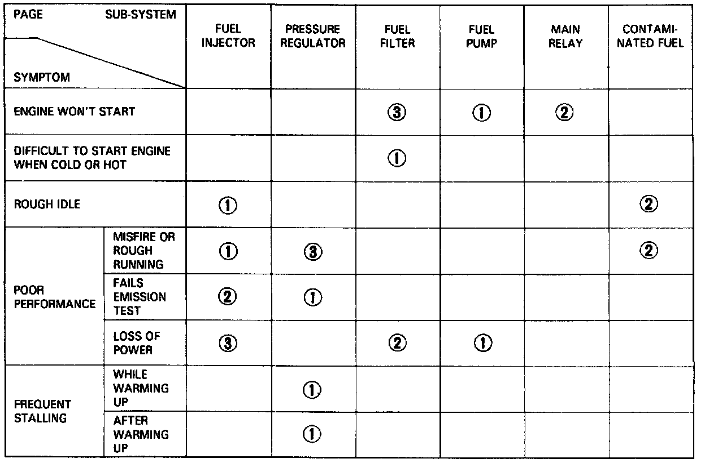

Fuel Supply Symptom to System Index

System Troubleshooting Guide
NOTE: Across each row in the chart, the sub-systems that could be sources of a symptom are ranked in the order they should be inspected starting with (1). Find the symptom in the left column, read across to the most likely source, then refer to the symptom or component listed at the top of that column. If inspection shows the system is OK, try the next most likely system (2), etc.